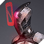
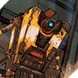
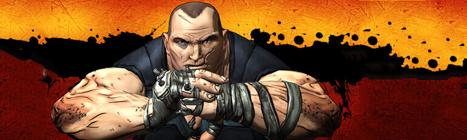

莉莉丝
玛雅
小缇娜
布里克
末底改
杰洛
坦尼斯
马库斯
爵士
莫西
小吵闹
据说莉莉丝是ATLAS公司利用外星科技实验的改造人，而且很可能是逃出来的。她拥有亚空间移动的能力，在使用力量时，她们皮肤会出现如同电路板般的流光效果纹样。出于某种不方便透露的原因，她和三位伙伴在潘多拉星球展开了冒险。并找到了传说中的秘藏宝物，还和亥伯龙公司的CEO，专横独裁的帅杰克展开了一场事关宇宙安危的大战。
玛雅曾经作为一个魔女，在她的故乡被奉为女神。但在得知真相后她选择来到潘多拉成为一名秘藏猎人。在和帅杰克的恩怨结束后，她选择回到故乡保护自己的族人。一边学习、了解更多魔女的秘密，一边训练自己的学徒。由于再也没有更多时间去参加新的冒险和战斗，她的魔女能力也将有一段时间不会再进步了。
缇娜小时候曾被一个强盗掳走，成为镒元素的实验品，在实验之前她的妈妈告诉她某个地方放了一个炸弹可以让她逃出生天。尽管小缇娜成功利用炸弹逃脱，可她的父母却没有这么幸运，双双成为了镒元素的牺牲品。长达后的缇娜变成了一个疯狂的爆破专家，只要是爆炸相关，她就极为擅长。虽然有时候她的想象力太过于丰富，但是当你需要把东西炸成灰，没人比她更合适。
狂人布里克是一个极度危险的家伙。很容易动怒，拥有赤手空拳能与大批敌人正面火拼的恐怖实力。他最初到潘多拉的目的是为了寻找他的妹妹。不同于其他密藏猎人的是，布里克有一帮喧闹的手下，为人也更加平易近人，当然这是在你获得他认可的情况下。
末底改是一名精英神射手，也是经验老道的猎人，作为一名赤红抵抗军的前任间谍，末底改精于悄无声息地击毙目标。这些年来他透过他的瞄准镜，见证了很多事。借着新伙伴利爪的协助，现在一个名为B-Team的组织里从事雇佣兵工作。
杰洛（Zero）是一名实力超强的雇佣刺客。在工作的难度逐渐令他不满之后，杰洛告别此刻生活踏上了寻找刺激的道路。他从酒保听到秘藏后，前往潘多拉。他的真名不是杰洛。那是大家叫他的,因为每次他刺杀某人，他的面罩显示一个“0”，所以他被称为杰洛（Zero）。
美丽而神经质的天才考古学家。科学的其中一个任务就是对未知的探索，但是未知同时也意味着不可预见的危险！科学家，尤其是知识量具足以改变局势的那类人，是最容易成为被利用、争夺的对象。坦尼斯曾经正是这样一位研究外星古文明的首席考古学家。这项工作给她带来了荣耀和成就，但随后发生的事情让这个并不坚强的女子受尽了折磨……
奸商马库斯以其没有得到授权且质量不稳定的武器贩卖机而闻名于潘多拉星球，其不得退货的规定更是臭名远扬。但是他仍然得到大多数人的尊重，甚至有的还将其当作神来膜拜，因为在潘多拉，武器已经不仅仅是防身护具的范畴了，是镇静剂、安眠药、谋生或谋杀、娱乐的器具，对很多人来说更是一种难以割舍的情感……
来自赫尔墨斯星球的他，喜爱游历探索未知的星球，而潘多拉的各种奇异动植物更是让他激动不已，为填补人类知识的空缺，他决心以编著一本潘多拉动植物志为己任。而为了达成这个愿望他甚至还搭上了自己的一条胳膊和一条腿，看来求知的路上要克服的不单是知识的障碍而且更需要有无畏的勇气！只要宇宙还有未被人类所了解的奥秘，就会有不断探索的智者去奋斗！
莫西以其魅力和热情好客而闻名。 但莫西拥有的不仅仅是一张漂亮的脸蛋——她在整个andora和Elpis都开展了业务。，从死亡竞技场到潜水俱乐部。 无论她在哪里看到金钱，雇佣兵都会随时搬起左右。 最近，她带着她在星际公路上的特许经营权，在保护区建立了一个新的酒吧。
真正贯穿无主之地系列整条主线的机器人角色，在一次意外导致小吵闹的生产线被毁坏之后，就仅剩下唯一的一台原型机，而它正是亥博龙公司初代总裁制作的原型机。
 莉莉丝
莉莉丝 玛雅
玛雅 小缇娜
小缇娜 末底改
末底改 坦尼斯
坦尼斯 爵士莉莉丝玛雅小缇娜末底改坦尼斯爵士
爵士莉莉丝玛雅小缇娜末底改坦尼斯爵士 据说莉莉丝是ATLAS公司利用外星科技实验的改造人，而且很可能是逃出来的。她拥有亚空间移动的能力，在使用力量时，她们皮肤会出现如同电路板般的流光效果纹样。出于某种不方便透露的原因，她和三位伙伴在潘多拉星球展开了冒险。并找到了传说中的秘藏宝物，还和亥伯龙公司的CEO，专横独裁的帅杰克展开了一场事关宇宙安危的大战。
据说莉莉丝是ATLAS公司利用外星科技实验的改造人，而且很可能是逃出来的。她拥有亚空间移动的能力，在使用力量时，她们皮肤会出现如同电路板般的流光效果纹样。出于某种不方便透露的原因，她和三位伙伴在潘多拉星球展开了冒险。并找到了传说中的秘藏宝物，还和亥伯龙公司的CEO，专横独裁的帅杰克展开了一场事关宇宙安危的大战。 玛雅曾经作为一个魔女，在她的故乡被奉为女神。但在得知真相后她选择来到潘多拉成为一名秘藏猎人。在和帅杰克的恩怨结束后，她选择回到故乡保护自己的族人。一边学习、了解更多魔女的秘密，一边训练自己的学徒。由于再也没有更多时间去参加新的冒险和战斗，她的魔女能力也将有一段时间不会再进步了。
玛雅曾经作为一个魔女，在她的故乡被奉为女神。但在得知真相后她选择来到潘多拉成为一名秘藏猎人。在和帅杰克的恩怨结束后，她选择回到故乡保护自己的族人。一边学习、了解更多魔女的秘密，一边训练自己的学徒。由于再也没有更多时间去参加新的冒险和战斗，她的魔女能力也将有一段时间不会再进步了。 来自赫尔墨斯星球的他，喜爱游历探索未知的星球，而潘多拉的各种奇异动植物更是让他激动不已，为填补人类知识的空缺，他决心以编著一本潘多拉动植物志为己任。而为了达成这个愿望他甚至还搭上了自己的一条胳膊和一条腿，看来求知的路上要克服的不单是知识的障碍而且更需要有无畏的勇气！只要宇宙还有未被人类所了解的奥秘，就会有不断探索的智者去奋斗！
来自赫尔墨斯星球的他，喜爱游历探索未知的星球，而潘多拉的各种奇异动植物更是让他激动不已，为填补人类知识的空缺，他决心以编著一本潘多拉动植物志为己任。而为了达成这个愿望他甚至还搭上了自己的一条胳膊和一条腿，看来求知的路上要克服的不单是知识的障碍而且更需要有无畏的勇气！只要宇宙还有未被人类所了解的奥秘，就会有不断探索的智者去奋斗！